같은 설정이 여러 파일에 있을 때 Claude Code가 어느 값을 적용하는지 답하는 글입니다. 값이 하나인 키는 Managed, 명령줄, 프로젝트 로컬, 공유 프로젝트, 사용자 순으로 가장 높은 위치의 값 하나를 적용합니다. 권한 규칙 같은 목록 키는 모든 위치의 항목을 합친 뒤 deny, ask, allow 순서로 평가합니다. 그래서 어느 위치에서든 deny에 걸린 호출은 다른 위치의 allow로 풀 수 없습니다.This post answers which value Claude Code applies when the same setting appears in several files. For a key that holds one value, the highest level wins, in the order managed, command line, project local, shared project, user. For a list key such as permission rules, Claude Code combines the entries from every level and evaluates them in deny, ask, allow order. So a call that a deny rule matches at any level cannot be released by an allow rule at another level.
--settings), 프로젝트 로컬, 공유 프로젝트, 사용자 순으로 가장 높은 위치의 값 하나를 적용합니다.Single-value keys: the highest level wins, in the order managed, command line (--settings), project local, shared project, user.allow는 폴더를 신뢰한 뒤에 적용되고 deny와 ask는 바로 적용됩니다.Workspace trust: allow rules in the shared project file apply after you trust the folder, while deny and ask apply right away.first-wins에서는 정책 키가 있는 가장 높은 소스 하나만 사용하고 나머지는 무시합니다.Managed sources: under the default first-wins, only the highest-ranked source that carries a policy key is used and the rest are ignored.Claude Code의 설정은 한 파일에만 있지 않습니다. 홈 디렉터리의 사용자 설정, 저장소에 커밋하는 프로젝트 설정, 나만 보는 로컬 설정, 조직이 배포하는 Managed 설정(managed settings)이 따로 있고 명령줄에서 한 세션에만 적용하는 값도 있습니다. 같은 키가 두 곳 이상에 있으면 어느 값이 적용되는지 헷갈리기 쉽습니다. 분명히 허용해 둔 명령을 Claude Code가 계속 묻는 이유도 여기에 있습니다.
이 글은 그 순서를 정리합니다. 설명은 2026년 11월 16일에 확인한 Claude Code v2.1.325의 공식 문서를 기준으로 합니다.
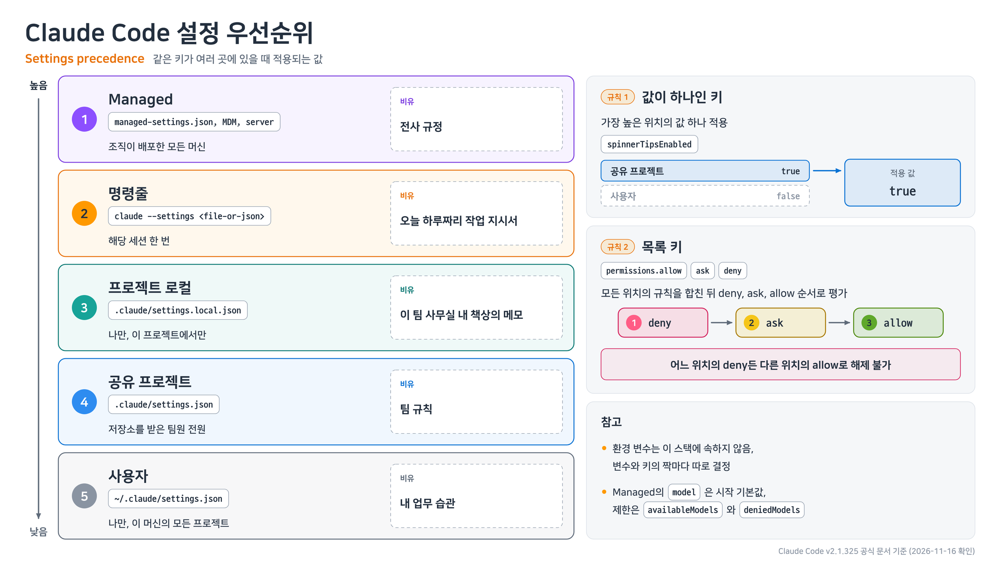
먼저 결론입니다.
--settings), 프로젝트 로컬, 공유 프로젝트, 사용자 순으로 가장 높은 위치의 값 하나를 적용합니다.permissions.allow, ask, deny)은 모든 위치의 규칙을 합친 뒤 deny(거부), ask(확인), allow(허용) 순서로 평가합니다.회사 규정에 비유하면 이해하기 쉽습니다. Managed는 전사 규정이고 --settings는 오늘 하루만 유효한 작업 지시서입니다. 프로젝트 로컬은 이 팀 사무실의 내 책상에 붙여 둔 메모, 공유 프로젝트는 팀 규칙, 사용자 설정은 어느 팀에 가든 따라오는 내 업무 습관입니다. 출근 시각처럼 답이 하나여야 하는 항목은 가장 위 문서의 값을 따릅니다. 금지 목록은 다르게 다룹니다. 모든 문서의 금지 조항을 한 장에 모아 놓고 보기 때문에, 팀 규칙이 허용해도 전사 규정이 금지한 일은 할 수 없습니다.
01
설정이 놓이는 위치는 다섯 곳입니다. 위치마다 그 설정이 적용되는 사람과 프로젝트의 범위(scope)가 다릅니다.
| 위치 | 파일 | 적용 대상 | 주 용도 |
|---|---|---|---|
| Managed | managed-settings.json, MDM, 서버 관리 설정 | 조직이 배포한 모든 머신 | 보안 정책, 컴플라이언스 |
| 명령줄 | claude --settings <file 또는 JSON> | 해당 세션 한 번 | 일회성 테스트 |
| 프로젝트 로컬 | .claude/settings.local.json | 나만, 해당 프로젝트에서만 | 개인 예외, 공유 전 테스트 |
| 공유 프로젝트 | .claude/settings.json | 저장소를 clone한 모든 팀원 | 팀 권한, hooks, plugins |
| 사용자 | ~/.claude/settings.json | 나만, 이 머신의 모든 프로젝트 | 개인 기본값 |
표 1. 설정 위치 다섯 곳. 위에서 아래로 우선순위가 낮아집니다
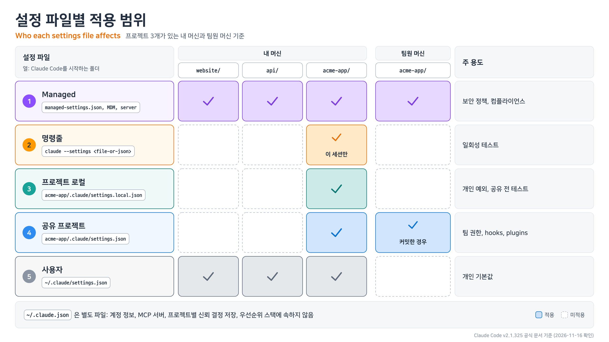
그림 2는 내 머신에 프로젝트 세 개(website, api, acme-app)가 있고 팀원이 acme-app을 따로 clone한 상황입니다. 사용자 설정은 내 머신의 세 프로젝트에 모두 적용되지만 팀원의 머신에는 닿지 않습니다. 공유 프로젝트 설정은 커밋해야 팀원에게 전달됩니다. 커밋하기 전에는 내 디스크에 있는 파일일 뿐입니다.
settings.local.json이 저장되는 곳: 권한 프롬프트에서 "Yes, and don't ask again"을 고르면 그 승인이 allow 규칙으로 이 파일에 저장됩니다. git 저장소 안에서는 하위 디렉터리에서 시작해도 저장소 루트의 .claude/settings.local.json에 저장하고 worktree에서는 main checkout 루트의 파일을 사용합니다. v2.1.211 이전에는 시작한 디렉터리에 두었습니다. 저장소 밖이거나 저장소 루트가 홈 디렉터리인 경우, 저장소 루트나 그 안의 .git, .claude가 내 소유가 아닌 경우, 그리고 Windows에서는 .claude/settings.json과 같은 폴더에 둡니다.**/.claude/settings.local.json을 추가하므로 커밋에 들어가지 않습니다. 직접 만든 파일은 .gitignore에 따로 추가해야 합니다.settings.json을 읽는 곳: 세션의 primary working directory에서 읽습니다. 저장소 루트에 커밋한 파일을 적용하려면 루트에서 Claude Code를 시작합니다.~/.claude.json은 별도 파일: Claude Code가 직접 관리하는 파일로 계정 정보, MCP 서버 구성, 프로젝트별 신뢰 결정, global config 키를 담습니다. 이 글에서 다루는 우선순위 스택에 속하지 않습니다.02
같은 키가 여러 위치에 있으면 Claude Code는 그 키를 설정한 위치 가운데 가장 높은 곳의 값을 사용합니다. 높은 쪽부터 순서는 이렇습니다.
--settings 어느 것도 Managed가 설정한 키를 덮어쓰지 못합니다. --model 같은 플래그도 조직이 허용한 모델 안에서만 고릅니다.--settings: 해당 세션에만 적용되고 파일은 바꾸지 않습니다. 사용자 설정 파일에 둘 수 있는 키는 모두 지정할 수 있지만 Managed 전용 키와 global config 키는 지정할 수 없습니다..claude/settings.local.json.claude/settings.json~/.claude/settings.json공식 문서는 스피너 아래에 팁을 보여 주는 spinnerTipsEnabled 키로 이 순서를 설명합니다. 사용자 설정에서 false로 꺼 두었더라도 팀의 공유 프로젝트 파일이 true로 설정하면 그 프로젝트에서는 팁이 보입니다. 그 프로젝트의 로컬 파일에 false를 넣으면 내 세션에서만 다시 꺼집니다. 조직의 Managed가 true로 정했다면 어느 파일로도, --settings로도 끌 수 없습니다.
환경 변수는 스택의 한 단계가 아닙니다. 셸 변수와 설정 키가 짝을 이루는 경우 어느 쪽을 적용하는지는 짝마다 정해져 있습니다. 셸에서 export한 ANTHROPIC_MODEL은 어느 파일의 model 키보다 우선합니다. 반면 ANTHROPIC_DEFAULT_MODEL은 어떤 파일도 model을 설정하지 않았을 때만 적용됩니다. 설정 파일 안의 env 블록은 일반 키여서 위 순서를 그대로 따릅니다.
Managed의 model은 시작 기본값이고 잠금이 아닙니다. 모델을 제한하려면 availableModels와 deniedModels를 사용합니다.
permissions.allow 같은 목록 키를 여러 파일이 설정하면 Claude Code는 한 파일의 목록을 고르지 않고 모든 목록을 합칩니다. 각 파일은 항목을 더할 수만 있고 다른 파일의 항목을 지우지 못합니다.
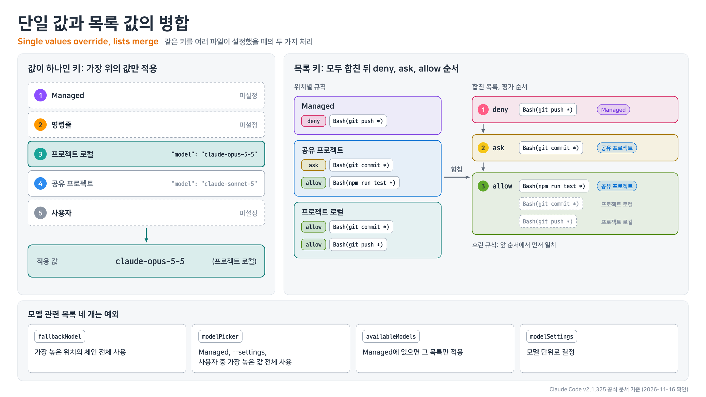
모델과 관련된 목록 키 네 개는 이 규칙을 따르지 않습니다. 표 2에 각 키의 동작을 정리했습니다.
| 키 | 동작 |
|---|---|
fallbackModel | 순서에 의미가 있는 체인이어서 이 키를 정의한 가장 높은 위치의 값 전체를 사용합니다 |
modelPicker | Managed, --settings, 사용자 가운데 가장 높은 위치의 값 전체를 사용하고 프로젝트와 로컬 파일의 값은 무시합니다(v2.1.242 이상) |
availableModels | Managed에 있으면 그 목록을 그대로 적용하고 사용자, 프로젝트, 로컬 파일이 더한 항목을 무시합니다. Managed가 아닌 위치끼리는 다른 목록처럼 합칩니다 |
modelSettings | 모델 단위로 effortLevel과 함께 결정합니다 |
표 2. 합치지 않는 모델 관련 목록 키 네 개
03
권한 규칙은 모든 위치의 것을 합친 뒤 deny, ask, allow 순서로 평가합니다. 이 순서에서 처음 일치한 규칙이 결과를 정하고 규칙이 얼마나 구체적인지는 순서를 바꾸지 않습니다.
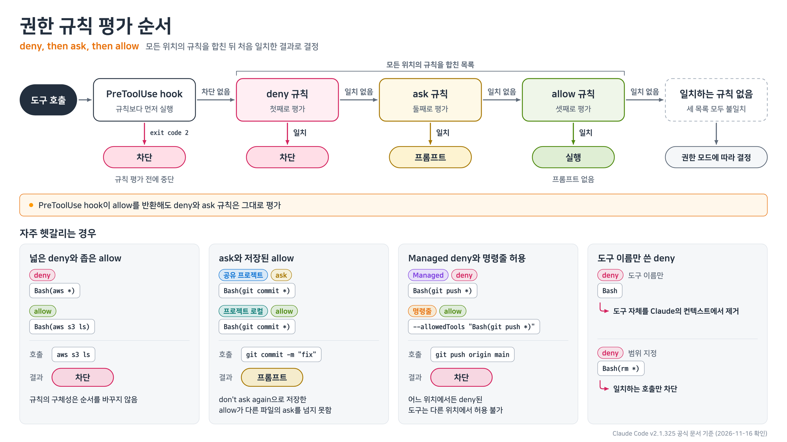
Bash(aws *) deny가 있으면 Bash(aws s3 ls) allow가 있어도 막힙니다. allow 규칙으로 deny 안에 예외를 만들 수 없습니다.Bash처럼 도구 이름만 적은 deny는 그 도구를 Claude의 컨텍스트에서 제거합니다. Bash(rm *)처럼 범위를 지정한 deny는 도구를 남겨 두고 일치하는 호출만 막습니다.회사 규정으로 옮기면 deny는 금지, ask는 건별 결재, allow는 사전 승인입니다. 담당자는 요청을 받으면 금지 목록부터 확인하고 그다음 결재 목록, 마지막으로 사전 승인 목록을 봅니다. 내 책상 메모에 사전 승인이라고 적어 두어도 팀 규칙에 결재 대상으로 올라 있으면 결재를 받아야 합니다. 실제 회사 규정과 다른 점도 있습니다. 더 구체적인 조항이 일반 조항보다 우선하지 않습니다.
규칙이 어느 파일에서 왔는지는 평가 순서에 영향을 주지 않습니다. 표 3은 자주 만나는 조합과 결과입니다.
| 상황 | 결과 |
|---|---|
| 사용자 allow, 프로젝트 deny | 막힘 |
| 프로젝트 allow, 사용자 deny | 막힘 |
Managed deny, --allowedTools로 허용 시도 | 막힘 |
Managed 규칙에 --disallowedTools 추가 | 제한이 추가됨 |
| 로컬에 "don't ask again"으로 저장된 allow, 프로젝트나 Managed에 ask | 계속 프롬프트 |
| 조직의 allow와 개인의 allow | 둘 다 적용 (allowManagedPermissionRulesOnly가 없을 때) |
표 3. 서로 다른 위치의 권한 규칙이 만났을 때의 결과
가장 자주 혼동하는 경우는 다섯째 줄입니다. 프롬프트에서 "Yes, and don't ask again"을 골랐는데 같은 도구에서 다시 묻는다면, 로컬 파일에 저장된 allow가 프로젝트나 Managed 파일의 ask를 넘지 못하기 때문입니다. CLI는 이 승인을 로컬 파일에만 저장합니다. VS Code 확장에서는 승인 카드에서 저장할 파일을 고를 수 있고 공유 프로젝트 파일을 고르면 팀 전체의 규칙이 바뀝니다.
PreToolUse hook이 "allow"를 반환해도 deny와 ask 규칙은 그대로 평가됩니다. 반대로 exit code 2로 끝나는 차단 hook은 권한 규칙을 평가하기 전에 호출을 멈추므로 allow 규칙보다 우선합니다. 그래서 Bash 전체를 allow하고 일부 명령만 hook으로 차단하는 구성을 만들 수 있습니다. 비유로는 규정집을 펴 보기 전에 출입구에서 요청을 막는 보안 요원입니다.
이 우선순위는 설정 파일과 명령줄 인자 사이의 규칙입니다. 설치한 mod가 도구 호출을 승인하는 경우는 따로 정해져 있습니다. Managed 설정과 managed-mcp.json이 없고 Team이나 Enterprise 로그인도 사용하지 않는 환경에서는 mod가 deny 규칙이 거부한 호출을 승인할 수 있습니다.
Bash 규칙은 Claude가 작성한 명령 문자열과 맞춰 봅니다. 같은 프로그램을 다른 형태로 호출하면 규칙과 일치하지 않습니다. 표 4는 공식 문서가 드는 예입니다.
| deny 또는 ask 규칙 | 막는 호출 | 막지 못하는 호출 |
|---|---|---|
Bash(curl *) | curl https://example.com | /usr/bin/curl https://example.com, sh -c 'curl https://example.com' |
Bash(rm *) | rm -rf build/ | /bin/rm -rf build/, bash -c 'rm -rf build/' |
Bash(git push *) | git push origin main | git -C . push origin main, git -c push.default=current push origin main |
표 4. Bash 규칙이 막는 호출과 막지 못하는 호출. 마지막 열의 호출은 다른 규칙과 권한 모드가 결정합니다
규정은 신청서에 적힌 문구를 보고 판단하는 셈입니다. 같은 일을 다른 이름으로 신청하면 금지 조항에 걸리지 않습니다. 파일 시스템과 네트워크 접근을 명령 문자열과 무관하게 OS 수준에서 강제하려면 sandbox를 함께 사용합니다. 문에 자물쇠를 다는 일은 sandbox가 맡습니다.
04
같은 키라도 어느 파일에 두었는지에 따라 적용되지 않거나 적용 시점이 늦어지는 경우가 있습니다.
permissions.defaultMode의 auto와 bypassPermissions는 프로젝트나 로컬 파일에 두어도 적용되지 않습니다. 사용자나 Managed 설정에 두거나 세션마다 --permission-mode로 지정합니다. v2.1.257 이전에는 bypassPermissions가 어느 파일에서든 적용됐습니다.
설정 레퍼런스의 Scope가 User, local, or managed, User or managed, User, Managed, Global config인 키도 공유 프로젝트 파일에서는 적용되지 않습니다. 저장소 파일이 끄는 방향으로만 바꿀 수 있는 키가 몇 개 있으며 해당 키의 Scope 줄에 적혀 있습니다.
공유 프로젝트 파일의 permissions.allow와 permissions.additionalDirectories는 권한을 넓히는 설정입니다. 그래서 그 폴더의 신뢰 대화상자(workspace trust dialog)를 수락한 뒤에만 적용됩니다. 대화상자는 그 폴더가 부여하려는 규칙과 디렉터리를 보여 주므로 수락하기 전에 검토할 수 있습니다. deny와 ask는 제한만 하므로 신뢰와 관계없이 바로 적용됩니다. 저장소를 clone한 직후에는 그 저장소가 커밋해 둔 allow 규칙이 효력을 갖지 않습니다.
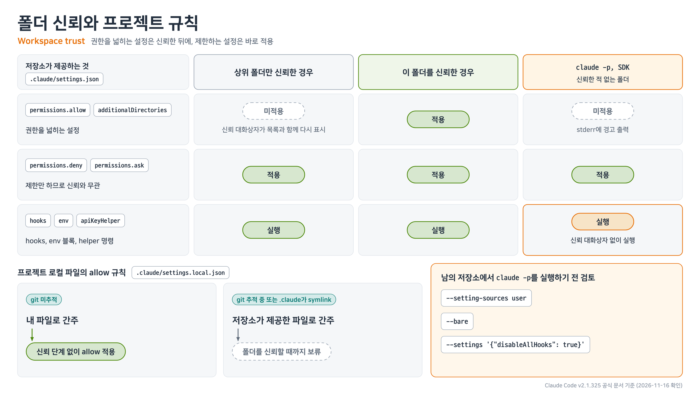
새 팀에 배치된 첫날을 떠올리면 됩니다. 팀 규칙 가운데 금지와 결재 조항은 서명하기 전부터 적용되고 권한을 넓혀 주는 조항은 내용을 확인하고 서명한 뒤에야 효력이 생깁니다.
claude -p와 SDK 세션: 신뢰 대화상자를 띄우지 않습니다. 신뢰한 적 없는 폴더에서는 프로젝트의 allow 규칙을 적용하지 않고 stderr에 경고를 남깁니다. 반면 설정 파일의 hooks, env 블록, apiKeyHelper 같은 helper는 이 경우에도 실행됩니다.-p를 실행할 때: 실행하기 전에 --setting-sources user, --bare, --settings '{"disableAllHooks": true}'를 검토합니다. 첫째는 프로젝트의 설정 파일과 .mcp.json을 읽지 않게 하고 셋째는 그 실행에서 hooks를 끕니다..claude/settings.local.json은 git이 추적하지 않는 동안에는 내 파일로 보고 신뢰 단계 없이 allow 규칙을 적용합니다. git이 추적 중이거나 .claude가 symlink라면 저장소가 제공한 파일로 보고 폴더를 신뢰할 때까지 규칙을 보류합니다.Read와 Edit 규칙의 /path 패턴은 규칙을 정의한 설정 위치를 기준으로 해석합니다. 파일 시스템 루트 기준이 아닙니다.
| 규칙을 정의한 위치 | /path가 가리키는 곳 |
|---|---|
| 공유 프로젝트, 프로젝트 로컬 | <primary working directory>/path |
사용자 ~/.claude/settings.json | ~/.claude/path |
--settings <file>로 넘긴 파일 | <file이 있는 디렉터리>/path |
| CLI 플래그, 세션 규칙 | <primary working directory>/path |
표 5. 규칙을 정의한 위치에 따른 /path 패턴의 기준
사용자 설정에 Read(/secrets/**) deny를 넣으면 프로젝트의 secrets가 아니라 ~/.claude/secrets/**를 막습니다. 모든 프로젝트에 적용하려면 //로 시작하는 절대 경로나 ~/로 시작하는 홈 기준 경로를 사용합니다.
05
Managed 설정은 조직이 개발자 머신에 배포하는 설정이고 다른 모든 위치보다 위에 있습니다. 전달 경로가 여러 가지여서 한 머신에 Managed 소스가 둘 이상 있을 수 있습니다. 그때 무엇이 적용되는지는 별도의 규칙을 따릅니다.
| 방식 | 정책이 저장되는 곳 | 읽는 시점 |
|---|---|---|
| 서버 관리 설정(server-managed settings) | claude.ai 관리 콘솔 또는 self-hosted Claude apps gateway | 시작할 때 가져오고 이후 1시간마다 확인 |
| MDM, OS 정책 | macOS com.anthropic.claudecode 구성 프로파일, Windows HKLM\SOFTWARE\Policies\ClaudeCode의 Settings 값 | 시작할 때 읽고 30분마다 변경 확인 |
| 파일 | macOS /Library/Application Support/ClaudeCode/, Linux와 WSL /etc/claude-code/, Windows C:\Program Files\ClaudeCode\의 managed-settings.json과 managed-settings.d/ | 시작할 때 읽고 파일이 바뀌면 다시 읽음 |
| HKCU 레지스트리 | HKCU\SOFTWARE\Policies\ClaudeCode | 시작할 때 읽고 30분마다 변경 확인. 위에 관리자 문서가 없을 때만 사용 |
표 6. Managed 설정의 전달 방식 네 가지
예전 Windows 경로 C:\ProgramData\ClaudeCode\managed-settings.json은 읽지 않습니다. 이 경로를 사용하던 조직은 새 경로로 옮겼는지 확인해야 합니다.
한 머신에 Managed 소스가 여러 개 있으면 Claude Code는 높은 쪽부터 이 순서로 확인합니다.
/login으로 로그인하거나, 설정을 제공하는 gateway 뒤의 Claude Desktop Code 탭에서 실행될 때만 가져옵니다. 다른 provider를 사용하거나 ANTHROPIC_BASE_URL이 Anthropic API가 아닌 곳을 가리키면 이 소스를 건너뛰고 다음 소스부터 확인합니다.managed-settings.json과 managed-settings.d/*.json을 병합한 결과입니다.Amazon Bedrock처럼 다른 provider로 Claude Code를 사용하는 환경은 첫째 소스를 건너뛰는 경우에 해당합니다. 이런 환경에서는 MDM이나 파일로 정책을 배포합니다.
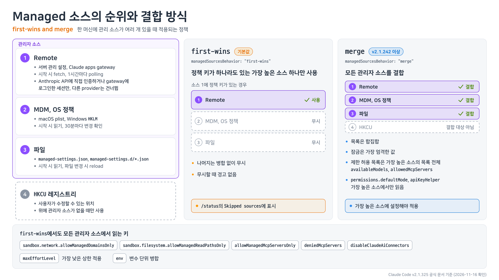
기본값인 managedSourcesBehavior: "first-wins"에서는 정책 키를 하나라도 가진 가장 높은 소스 하나만 사용하고 나머지는 병합하지 않고 무시합니다. 무시할 때 경고는 없고 /status의 Skipped sources 줄에만 나타납니다. 서버 관리 설정에 키 하나만 넣어도 MDM과 파일로 배포한 정책 전체가 무시될 수 있습니다.
전사 규정이 본사 포털, 지사 공문, 사무실 게시판으로 따로 내려오는 회사를 떠올리면 됩니다. 기본 동작은 가장 높은 경로로 온 문서 한 부만 규정으로 인정하고 나머지는 펴 보지 않는 것입니다.
몇몇 키는 first-wins에서도 HKCU를 뺀 모든 관리자 소스에서 읽습니다.
allowManagedDomainsOnly와 allowManagedReadPathsOnlyallowManagedMcpServersOnly, deniedMcpServers, disableClaudeAiConnectorsmaxEffortLevel: 모든 관리자 소스 가운데 가장 낮은 상한을 적용합니다.env: 변수 단위로 병합하고 같은 변수는 높은 소스의 값을 사용합니다."merge"로 바꾸면 정책 키가 있는 모든 관리자 소스를 결합합니다(v2.1.242 이상). 표 7에 키 종류별 결합 방식을 정리했습니다. 이 값은 배포한 소스 가운데 가장 높은 소스에 두어야 적용됩니다. 하위 소스의 permissions.allow와 hooks도 정책에 더해지므로 모든 하위 소스가 관리자 통제 아래 있을 때만 켭니다.
| 키 종류 | 결합 방식 | 예 |
|---|---|---|
| 목록 | 모든 소스의 항목을 합칩니다 | permissions.allow, hooks, deniedMcpServers |
| 잠금 | 어느 소스든 가장 엄격한 값을 적용합니다 | allowManagedHooksOnly, permissions.disableBypassPermissionsMode |
| 제한 허용 목록 | 그 목록을 설정한 가장 높은 소스의 목록 전체를 사용합니다 | availableModels, allowedMcpServers, strictKnownMarketplaces |
| 가장 높은 소스에서만 읽는 키 | 하위 소스의 값을 무시합니다 | modelPicker, permissions.defaultMode, apiKeyHelper |
| 그 밖의 키 | 그 키를 설정한 가장 높은 소스의 값을 사용합니다 | model, cleanupPeriodDays |
표 7. managedSourcesBehavior: "merge"에서 키 종류별 결합 방식. HKCU 레지스트리는 다른 소스와 결합하지 않습니다
managed-settings.json을 먼저 병합하고 같은 디렉터리의 managed-settings.d/에 있는 *.json 파일을 알파벳 순으로 병합합니다. 이 drop-in 디렉터리는 v2.1.83에서 추가됐습니다. 10-telemetry.json, 20-security.json처럼 숫자 접두사로 순서를 정하면 팀별로 정책 조각을 나눠 관리할 수 있습니다. 같은 키가 겹치면 단일 값은 뒤 파일의 값이 적용되고 목록은 중복을 빼고 합쳐집니다. env나 sandbox 같은 중첩 블록은 키 단위로 병합됩니다.
표 8의 키는 사용자나 프로젝트 파일에 넣어도 효과가 없습니다. 대부분 Managed의 값만 인정하게 하는 잠금입니다.
| 키 | 효과 |
|---|---|
allowManagedPermissionRulesOnly | Managed를 권한 규칙의 유일한 출처로 만듭니다. 사용자, 프로젝트, 로컬, --settings 파일의 allow, ask, deny 규칙과 --allowedTools를 무시합니다 |
allowManagedHooksOnly | 실행되는 hooks를 제한합니다 |
allowManagedMcpServersOnly | Managed의 allowedMcpServers만 인정합니다. deniedMcpServers는 모든 위치에서 병합합니다 |
sandbox.network.allowManagedDomainsOnly | Managed의 allowedDomains와 WebFetch(domain:...) allow 규칙만 인정하고 나머지 도메인은 묻지 않고 차단합니다 |
sandbox.filesystem.allowManagedReadPathsOnly | Managed의 filesystem.allowRead 경로만 인정합니다. denyRead는 모든 위치에서 병합합니다 |
strictKnownMarketplaces, blockedMarketplaces | 플러그인 마켓플레이스의 허용 목록과 차단 목록입니다 |
strictPluginOnlyCustomization | 사용자와 프로젝트 출처의 skills, agents, hooks, MCP 서버를 차단합니다 |
disableSideloadFlags | --plugin-dir, --plugin-url, --agents, --mcp-config 플래그를 시작할 때 거부합니다 |
표 8. 권한, 플러그인과 관련된 Managed 전용 키. 전체 목록은 설정 레퍼런스의 Scope 열에서 확인합니다
permissions.disableBypassPermissionsMode와 permissions.disableAutoMode는 Managed 전용이 아니어서 어느 파일에서든 동작합니다. 개인이 자기 설정에 넣어 스스로 bypass 모드를 잠글 수 있고 Managed에 두면 다른 위치에서 풀 수 없습니다.
allowManagedPermissionRulesOnly를 켜도 --disallowedTools와 현재 세션의 deny, ask 규칙은 계속 적용됩니다. 제한만 하는 규칙이기 때문입니다. 반면 Cowork 같은 호스트가 세션을 시작하며 넘기는 폴더 접근 allow 규칙은 버려집니다. 그 폴더에 파일을 저장하려면 Edit(~/CoworkProjects/**) 같은 allow 규칙을 Managed 정책에 직접 넣어야 합니다.
세션을 제한하는 쪽의 값이라면 하위 위치의 값을 인정하는 키가 있습니다. 2026년 11월 16일 기준 공식 문서의 표에는 13개가 있습니다. 회사가 허용한 일이라도 나는 하지 않겠다고 스스로 정한 제한은 받아들여지는 것과 같습니다.
| 키 | 인정하는 값 | 필요 버전 |
|---|---|---|
disableClaudeAiConnectors | 어느 위치든 true | |
enableArtifact | 어느 위치든 false, 어느 위치든 disableArtifact: true | v2.1.242 이상 |
isolatePeerMachines | 어느 위치든 true | |
permissions.blockReadsOutsideWorkingDirectories | 어느 위치든 true | v2.1.257 이상 |
permissions.blockWritesOutsideWorkingDirectories | 어느 위치든 true | v2.1.314 이상 |
permissions.denyInsteadOfPrompting | 사용자 파일이나 --settings의 true | v2.1.319 이상 |
autoMode.classifyAllShell | 사용자 파일이나 --settings의 true | |
remoteControlAtStartup | 공유 프로젝트, 로컬 파일의 false | |
crossSessionInbound | 공유 프로젝트, 로컬 파일의 더 엄격한 값. accept, hold, refuse 순으로 엄격합니다 | |
useAutoModeDuringPlan | Managed 소스, --settings, 사용자 파일, 로컬 파일의 false. 공유 프로젝트 파일의 false는 무시합니다 | |
syncClaudeAiSkills | useAutoModeDuringPlan과 같은 위치의 false | |
syncClaudeAiPlugins | useAutoModeDuringPlan과 같은 위치의 false | |
maxEffortLevel | 어느 위치든 더 낮은 상한. 가장 낮은 상한을 적용합니다 | v2.1.267 이상 |
표 9. Managed가 다른 값을 설정해도 하위 위치의 제한 값을 인정하는 키. 2026년 11월 16일 공식 문서 기준
사용자, 프로젝트, 로컬 파일은 엄격하게 검사합니다. JSON이나 최상위 구조가 잘못되면 파일 전체를 거부하고 개별 항목만 잘못되면 그 항목을 건너뜁니다. Managed는 정책이 비는 상황을 막기 위해 다르게 동작합니다.
allowManagedPermissionRulesOnly, disableAutoMode처럼 제한 값이 하나뿐인 키가 있습니다. 이런 키에 읽을 수 없는 값이 있으면 제한하는 값으로 간주합니다(fail closed, v2.1.282 이상).permissions의 deny나 ask 목록을 읽을 수 없으면 같은 블록의 allow와 additionalDirectories를 보류합니다. 제한 없이 허용만 적용되는 상황을 막기 위해서입니다.--model과 ANTHROPIC_MODEL로 세션의 모델을 고르는 일. 선택 범위는 availableModels로 제한합니다.서버 관리 설정의 로컬 캐시를 고쳐도 다음 가져오기가 성공하면 서버의 내용으로 바뀝니다.
06
Claude Code는 설정 파일을 지켜보다가 바뀌면 다시 읽으므로 대부분의 수정은 재시작 없이 실행 중인 세션에 반영됩니다. 표 10은 대상별 반영 시점입니다.
| 대상 | 반영 시점 |
|---|---|
| 사용자, 프로젝트, 로컬 파일과 파일로 배포한 Managed | 저장하면 실행 중인 세션에 반영. permissions, hooks, apiKeyHelper 포함 |
| MDM, OS 정책 | 30분마다 변경 확인 |
| 서버 관리 설정 | 1시간마다 확인 |
model, effortLevel, modelSettings | 세션을 시작할 때 한 번만 읽음. 세션 중에는 /model과 /effort로 변경 |
requiredMinimumVersion | 다음 세션 시작부터 |
표 10. 설정 변경이 반영되는 시점
적용 상태는 명령 세 가지로 확인합니다.
/status: Setting sources 줄이 이 세션에 로드된 설정 파일을 보여 줍니다. Managed가 적용 중이면 Enterprise managed settings 뒤 괄호에 선택된 출처가 표시됩니다. 값은 (remote), (plist), (HKLM), (file), (file + drop-ins), (HKCU) 같은 형태입니다. Skipped sources 줄에는 머신에 있지만 선택되지 않은 소스가 나옵니다. Managed 항목이 없으면 정책 키를 가진 Managed 소스를 찾지 못한 것입니다./permissions: 모든 권한 규칙과 각 규칙이 온 설정 파일을 나열합니다. 규칙이 적용되는 이유를 추적할 때 가장 빠릅니다.claude doctor: 거부되거나 잘못된 항목을 출처와 필드별로 보여 주고 서버 관리 설정을 가져온 결과도 알려 줍니다./status의 줄은 어떤 파일을 읽었는지만 알려 줍니다. 키마다 어느 파일의 값이 적용됐는지는 보여 주지 않습니다.
07
일반적인 구성에서는 조직이 Managed에 deny와 잠금을 둡니다. 팀은 공유 프로젝트 파일에 작업용 allow를 두고 개인은 로컬 파일에 예외를 둡니다. 설정 파일은 엄격한 JSON이어서 // 주석이나 마지막 쉼표가 있으면 문법 오류가 됩니다. 아래 예시에서 파일 이름을 코드 밖에 적은 이유입니다.
조직이 배포하는 /etc/claude-code/managed-settings.json입니다.
{
"permissions": {
"deny": ["Read(./.env)", "Read(./secrets/**)", "Bash(git push *)"],
"disableBypassPermissionsMode": "disable"
}
}팀이 커밋하는 .claude/settings.json입니다.
{
"permissions": {
"allow": ["Bash(npm run lint)", "Bash(npm run test *)"],
"ask": ["Bash(git commit *)"]
}
}개인이 두는 .claude/settings.local.json입니다. git이 추적하지 않는 파일입니다.
{
"permissions": {
"allow": ["Bash(git commit *)", "Bash(git push *)"]
}
}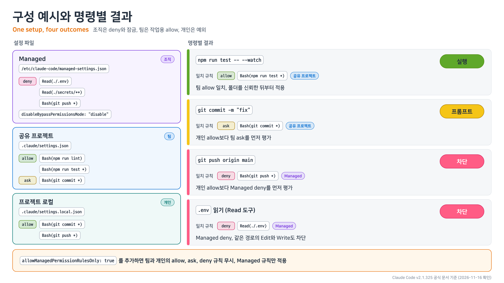
이 구성에서 호출 네 가지의 결과입니다.
npm run test -- --watch: 팀 allow와 일치해 프롬프트 없이 실행됩니다. 팀원이 폴더를 신뢰한 뒤부터 적용됩니다.git commit -m ...: 개인 allow가 있어도 팀 ask를 먼저 평가하므로 계속 묻습니다.git push origin main: 개인 allow가 있어도 Managed deny가 먼저 일치해 막힙니다..env 읽기: Managed deny로 막힙니다. Read deny 규칙은 같은 경로의 Edit와 Write도 함께 막습니다.여기에 allowManagedPermissionRulesOnly: true를 추가하면 팀과 개인 파일의 allow, ask, deny 규칙이 모두 무시되고 Managed 규칙만 남습니다. 팀의 npm allow도 Managed 쪽으로 옮겨야 프롬프트 없이 실행됩니다. 회사로 치면 전사 규정에 본사 문서만 규정으로 인정한다는 조항이 추가된 경우입니다. 팀 규칙과 책상 메모에 적힌 조항은 금지든 승인이든 효력을 잃습니다.
08
설정한 값이 적용되지 않는 것처럼 보이면 아래 순서로 확인합니다.
/status의 Setting sources 줄에 그 파일이 있는지 봅니다. JSON이 깨진 파일은 통째로 건너뜁니다.--settings, Managed 소스를 확인합니다. 플래그나 환경 변수가 그 키만 따로 덮어쓰는 경우도 있습니다.defaultMode: "auto"처럼 파일 위치 때문에 적용되지 않는 값이 있습니다./permissions에서 같은 호출과 일치하는 규칙을 찾습니다.additionalDirectories가 적용되지 않습니다./status의 Skipped sources와 claude doctor로 선택된 소스와 버려진 항목을 확인합니다.Claude Code settings do not live in one file. There are user settings in your home directory, project settings you commit to the repository, local settings only you see, and managed settings your organization deploys. You can also pass values on the command line for a single session. When the same key appears in two or more of these places, it is easy to lose track of which value applies. This is also why Claude Code sometimes keeps asking about a command you clearly allowed.
This post sorts out that order. It is based on the official documentation of Claude Code v2.1.325, checked on November 16, 2026.
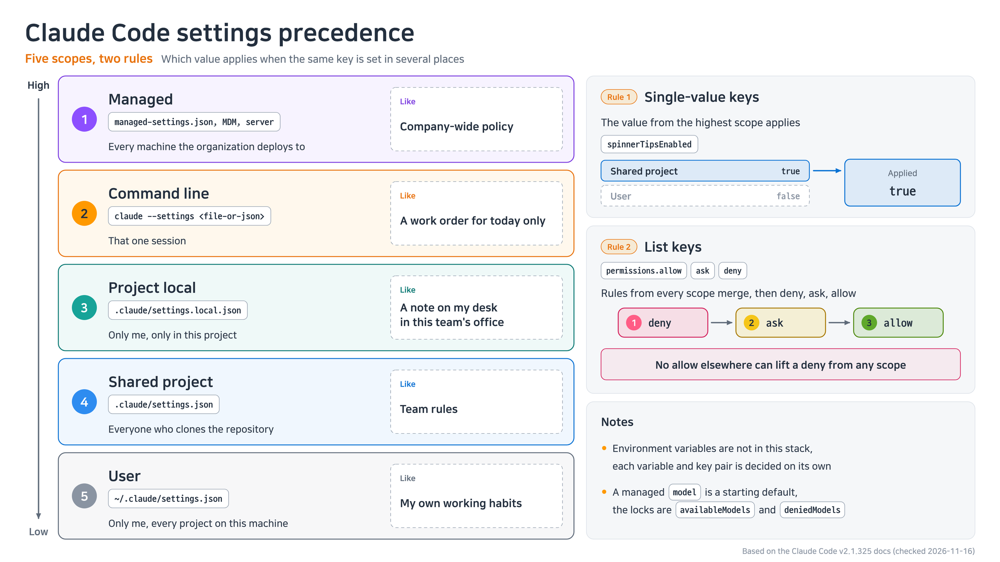
The conclusion first.
--settings), project local, shared project, user.permissions.allow, ask, deny) from every location are combined and then evaluated in deny, ask, allow order.A company's rulebooks make this easier to picture. Managed settings are the company-wide policy, and --settings is a work order that is valid for today only. Project local settings are a note stuck on my desk in this team's office, shared project settings are the team rules, and user settings are my own working habits that follow me to any team. For an item that needs exactly one answer, such as the time work starts, the highest document decides. The list of prohibited things is handled differently. Every document's prohibitions are gathered onto one sheet, so something the company-wide policy prohibits stays prohibited even when the team rules allow it.
01
Settings can sit in five locations. Each location has a different scope: the set of people and projects its settings apply to.
| Location | File | Who it affects | Use it for |
|---|---|---|---|
| Managed | managed-settings.json, MDM, server-managed settings | Every machine the organization deploys to | Security policy, compliance |
| Command line | claude --settings <file or JSON> | That one session | One-off tests |
| Project local | .claude/settings.local.json | Only you, only in that project | Personal overrides, testing before sharing |
| Shared project | .claude/settings.json | Every teammate who clones the repository | Team permissions, hooks, plugins |
| User | ~/.claude/settings.json | Only you, in every project on this machine | Personal defaults |
Table 1. The five settings locations. Precedence decreases from top to bottom
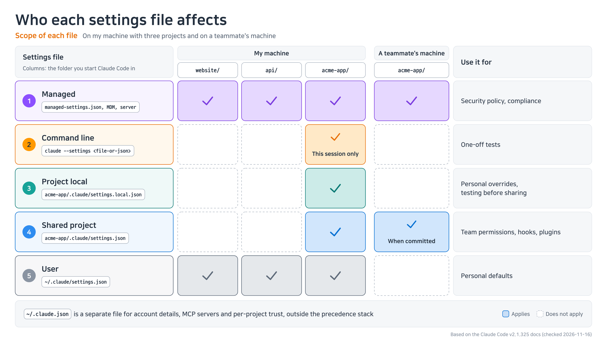
Figure 2 assumes three projects on my machine (website, api, acme-app) and a teammate with their own clone of acme-app. User settings apply to all three projects on my machine and do not reach the teammate's machine. Shared project settings reach the teammate only once they are committed. Until then the file is just a file on my disk.
settings.local.json is saved: when you choose "Yes, and don't ask again" on a permission prompt, the approval is saved to this file as an allow rule. Inside a git repository Claude Code saves it to .claude/settings.local.json at the repository root even when you start in a subdirectory, and in a worktree it uses the file at the main checkout's root. Before v2.1.211 it kept the file in the starting directory. Outside a repository, when the repository root is your home directory, when the repository root or its .git or .claude entry is not owned by your user, and on Windows, the file stays in the same folder as .claude/settings.json.**/.claude/settings.local.json to your global git excludes, so the file stays out of your commits. If you create the file by hand, add it to .gitignore yourself.settings.json is read from: the session's primary working directory. To apply a file committed at the repository root, start Claude Code at the root.~/.claude.json is a separate file: Claude Code maintains it for itself. It holds account details, MCP server configurations, per-project trust decisions, and the global config keys. It is not part of the precedence stack this post covers.02
When the same key appears in several locations, Claude Code uses the value from the highest location that sets it. The order, highest first, is as follows.
--settings overrides a key that managed settings set. A flag such as --model also picks only from the models your organization allows.--settings: applies to that session only and changes no file. It can set any key your user settings file can set, but not managed-only keys or global config keys..claude/settings.local.json.claude/settings.json~/.claude/settings.jsonThe official documentation explains this order with spinnerTipsEnabled, the key that shows a tip under the spinner. Even if you turn it off with false in your user settings, the tips appear in a project whose shared project file sets it to true. Put false in that project's local file and the tips go away again in your sessions only. If your organization's managed settings set it to true, no file and no --settings value turns it off.
Environment variables are not a level in the stack. When a shell variable and a settings key form a pair, which one applies is decided pair by pair. ANTHROPIC_MODEL exported in your shell applies over the model key from any file. ANTHROPIC_DEFAULT_MODEL, in contrast, applies only when no file sets model. An env block inside a settings file is an ordinary key and follows the order above.
A managed model is a starting default, not a lock. To restrict models, use availableModels and deniedModels.
When several files set a list key such as permissions.allow, Claude Code does not pick one file's list. It combines all of them. Each file can only add entries and cannot remove another file's entries.
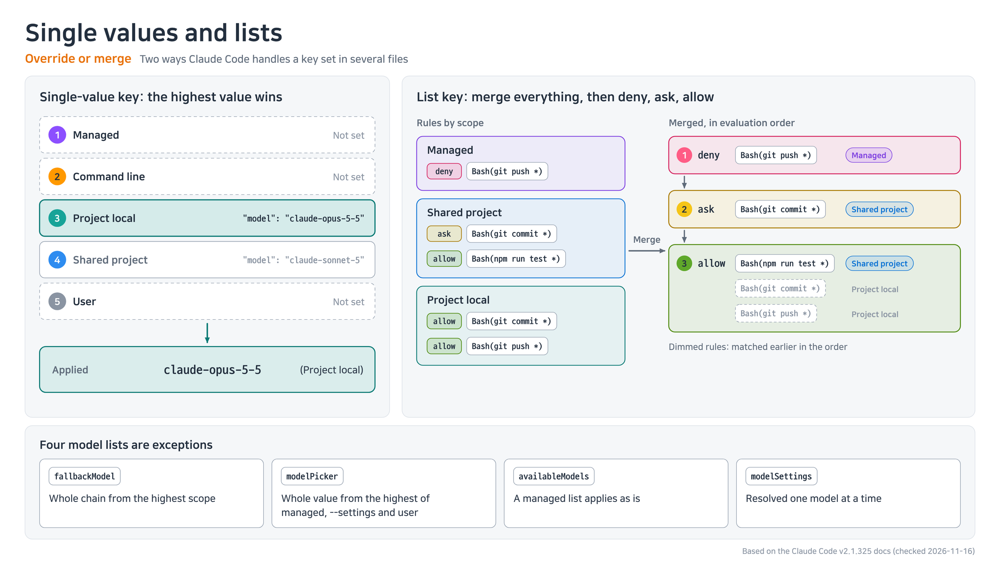
Four list keys related to models do not follow this rule. Table 2 lists how each one behaves.
| Key | Behavior |
|---|---|
fallbackModel | An ordered chain where position carries meaning, so Claude Code takes the whole value from the highest location that defines it |
modelPicker | Takes the whole value from the highest of managed, --settings, and user, and ignores the key in project and local files (v2.1.242 or later) |
availableModels | When managed settings define it, that list applies as is and entries added in user, project, or local files are ignored. Across non-managed locations it merges like any other list |
modelSettings | Resolved one model at a time, together with effortLevel |
Table 2. The four model-related list keys that are not merged
03
Permission rules from every location are combined and then evaluated in deny, ask, allow order. The first rule that matches in that order decides the outcome, and how specific a rule is does not change the order.
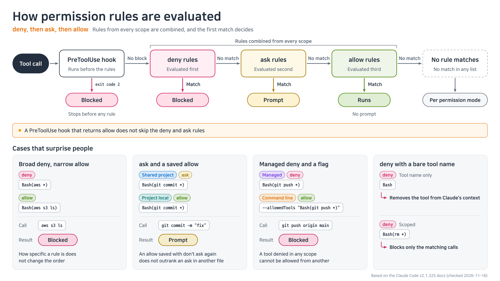
Bash(aws *) deny rule, the call is blocked even when a Bash(aws s3 ls) allow rule exists. An allow rule cannot carve an exception out of a deny rule.Bash, removes that tool from Claude's context. A scoped deny rule such as Bash(rm *) leaves the tool available and blocks only matching calls.In the company's rulebooks, deny is a prohibition, ask is case-by-case sign-off, and allow is pre-approval. When a request arrives, the clerk checks the prohibited list first, then the sign-off list, and the pre-approved list last. Even if the note on my desk says pre-approved, I still need sign-off when the team rules list the item as requiring it. One thing differs from real company rules. A more specific clause does not take precedence over a general one.
Which file a rule came from does not affect the evaluation order. Table 3 lists common combinations and their outcomes.
| Situation | Outcome |
|---|---|
| User allow, project deny | Blocked |
| Project allow, user deny | Blocked |
Managed deny, an attempt to allow with --allowedTools | Blocked |
--disallowedTools added on top of managed rules | Restriction added |
| An allow saved locally with "don't ask again", an ask in project or managed settings | Still prompts |
| The organization's allow and your own allow | Both apply (without allowManagedPermissionRulesOnly) |
Table 3. Outcomes when permission rules from different locations meet
The fifth row is the one people confuse most. If you chose "Yes, and don't ask again" on a prompt and the same tool asks again, the allow saved in your local file does not outrank an ask in a project or managed file. The CLI saves this approval only to your local file. In the VS Code extension the approval card lets you pick the destination file, and picking the shared project file changes the rule for the whole team.
Even when a PreToolUse hook returns "allow", deny and ask rules are still evaluated. In the other direction, a blocking hook that exits with code 2 stops the call before permission rules are evaluated, so it takes precedence over allow rules. That makes it possible to allow all of Bash and block a few commands with a hook. In the analogy, it is a security guard who stops a request at the entrance before anyone opens the rulebook.
This precedence is between settings files and command line arguments. Whether a mod you install can approve a tool call is decided separately. In a setup with no managed settings and no managed-mcp.json, and without a Team or Enterprise login, a mod can approve a call that a deny rule refuses.
A Bash rule is matched against the command text Claude writes. The same program invoked in a different form does not match the rule. Table 4 shows the examples the official documentation gives.
| Deny or ask rule | Stops | Does not stop |
|---|---|---|
Bash(curl *) | curl https://example.com | /usr/bin/curl https://example.com, sh -c 'curl https://example.com' |
Bash(rm *) | rm -rf build/ | /bin/rm -rf build/, bash -c 'rm -rf build/' |
Bash(git push *) | git push origin main | git -C . push origin main, git -c push.default=current push origin main |
Table 4. Calls a Bash rule stops and calls it does not. Your other rules and the permission mode decide the calls in the last column
The rulebook judges by the wording on the request form, so to speak. The same act requested under a different name does not hit the prohibition. To enforce filesystem and network access at the OS level regardless of the command text, use the sandbox as well. Putting a lock on the door is the sandbox's job.
04
The same key can fail to apply, or apply later, depending on which file it is in.
The auto and bypassPermissions values of permissions.defaultMode do not take effect from project or local files. Set them in user or managed settings, or pass --permission-mode for one session. Before v2.1.257, bypassPermissions took effect from any file.
Keys whose Scope in the settings reference is User, local, or managed, User or managed, User, Managed, or Global config do not apply from the shared project file either. A few of them can still be switched off by a repository file, and the Scope line of each such key says so.
permissions.allow and permissions.additionalDirectories in the shared project file are settings that grant capability. So they apply only after you accept the workspace trust dialog for that folder. The dialog lists the rules and directories the folder would grant, so you can review them before accepting. deny and ask only restrict, so they apply right away regardless of trust. Right after you clone a repository, the allow rules it committed have no effect.
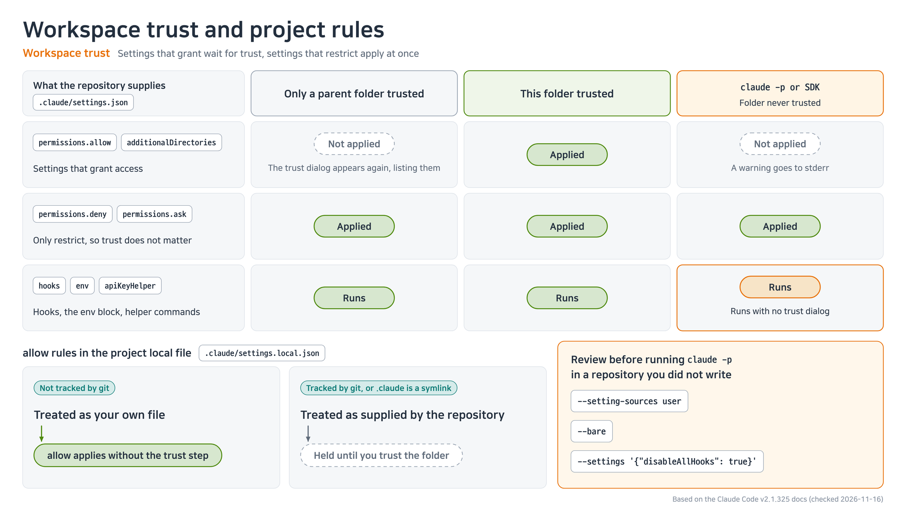
Think of the first day after being assigned to a new team. Among the team rules, the prohibition and sign-off clauses apply before I sign anything, and the clauses that widen what I may do take effect only after I read them and sign.
claude -p and SDK sessions: they do not show the trust dialog. In a folder you never trusted, Claude Code does not apply the project's allow rules and prints a warning to stderr. Hooks in settings files, the env block, and helpers such as apiKeyHelper still run in that case.-p in a repository you did not write: before you run it, consider --setting-sources user, --bare, and --settings '{"disableAllHooks": true}'. The first keeps Claude Code from reading the project's settings files and .mcp.json, and the third turns hooks off for that run..claude/settings.local.json, Claude Code treats it as your own file and applies its allow rules without the trust step. When git tracks the file, or .claude is a symlink, Claude Code treats it as supplied by the repository and holds its rules until you trust the folder.A /path pattern in a Read or Edit rule is resolved against the settings location that defines the rule. It does not anchor at the filesystem root.
| Where the rule is defined | What /path resolves to |
|---|---|
| Shared project, project local | <primary working directory>/path |
User ~/.claude/settings.json | ~/.claude/path |
A file passed with --settings <file> | <directory of file>/path |
| CLI flags, session rules | <primary working directory>/path |
Table 5. Where a /path pattern anchors, by the location that defines the rule
A Read(/secrets/**) deny rule in user settings blocks ~/.claude/secrets/**, not a secrets directory in your project. To make a rule apply in every project, use an absolute path that starts with // or a home-relative path that starts with ~/.
05
Managed settings are the settings an organization deploys to developers' machines, and they sit above every other location. They can be delivered in several ways, so one machine can have two or more managed sources. What applies then follows a separate set of rules.
| Mechanism | Where the policy is stored | When it is read |
|---|---|---|
| Server-managed settings | The claude.ai admin console or a self-hosted Claude apps gateway | Fetched at startup, then checked every hour |
| MDM or OS-level policy | The macOS com.anthropic.claudecode configuration profile, or the Settings value under Windows HKLM\SOFTWARE\Policies\ClaudeCode | Read at startup, then checked for changes every 30 minutes |
| File | managed-settings.json and managed-settings.d/ in /Library/Application Support/ClaudeCode/ on macOS, /etc/claude-code/ on Linux and WSL, and C:\Program Files\ClaudeCode\ on Windows | Read at startup, then reloaded when a file changes |
| HKCU registry | HKCU\SOFTWARE\Policies\ClaudeCode | Read at startup, then checked for changes every 30 minutes. Used only when no admin document is present above it |
Table 6. The four delivery mechanisms for managed settings
Claude Code does not read the legacy Windows path C:\ProgramData\ClaudeCode\managed-settings.json. An organization that used this path should check that it has moved to the new one.
When one machine has several managed sources, Claude Code checks them in this order, highest first.
/login, or runs in Claude Desktop's Code tab behind a gateway that serves settings. On other providers, or when ANTHROPIC_BASE_URL points somewhere other than Anthropic's API, it skips this source and starts at the next one.managed-settings.json and managed-settings.d/*.json merged together.An environment that runs Claude Code on another provider, such as Amazon Bedrock, is a case where the first source is skipped. In such an environment, deploy the policy through MDM or a file.
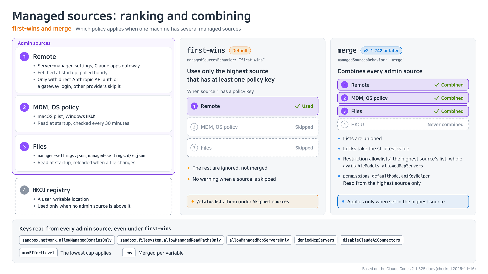
Under the default managedSourcesBehavior: "first-wins", Claude Code uses only the highest-ranked source that carries at least one policy key and ignores the rest without merging them. It shows no warning for what it ignores. The skipped sources appear only on the Skipped sources line in /status. A single key in server-managed settings can make Claude Code ignore the whole policy deployed through MDM and files.
Picture a company whose company-wide policy arrives separately through the head office portal, a branch memo, and the office notice board. By default only the one document that came through the highest channel counts as the policy, and the others are never opened.
A few keys are read from every admin source, which excludes HKCU, even under first-wins.
allowManagedDomainsOnly and allowManagedReadPathsOnlyallowManagedMcpServersOnly, deniedMcpServers, and disableClaudeAiConnectorsmaxEffortLevel: the lowest cap among all admin sources applies.env: merged per variable, and for the same variable the higher source's value is used.Setting it to "merge" combines every admin source that carries a policy key (v2.1.242 or later). Table 7 lists how each kind of key combines. The value takes effect only when it is set in the highest-ranked source you deploy. A lower source's permissions.allow rules and hooks are added to the policy too, so turn it on only when every lower source is under an administrator's control.
| Kind of key | How it combines | Examples |
|---|---|---|
| Lists | Entries from every source are combined | permissions.allow, hooks, deniedMcpServers |
| Locks | The strictest value any source sets applies | allowManagedHooksOnly, permissions.disableBypassPermissionsMode |
| Restriction allowlists | The whole list comes from the highest-ranked source that sets it | availableModels, allowedMcpServers, strictKnownMarketplaces |
| Keys read from the highest-ranked source only | The key is ignored in every lower source | modelPicker, permissions.defaultMode, apiKeyHelper |
| Every other key | The value comes from the highest-ranked source that sets it | model, cleanupPeriodDays |
Table 7. How each kind of key combines under managedSourcesBehavior: "merge". The HKCU registry never merges with another source
Claude Code merges managed-settings.json first, then the *.json files in managed-settings.d/ in the same directory, in alphabetical order. This drop-in directory was added in v2.1.83. Numeric prefixes such as 10-telemetry.json and 20-security.json set the order, so each team can own its part of the policy. When the same key appears twice, a single value takes the later file's value and lists combine with duplicates removed. Nested blocks such as env and sandbox merge key by key.
The keys in Table 8 have no effect in user or project files. Most of them are locks that make Claude Code honor only the managed value.
| Key | Effect |
|---|---|
allowManagedPermissionRulesOnly | Makes managed settings the only source of permission rules. Claude Code ignores allow, ask, and deny rules in user, project, local, and --settings files, and ignores --allowedTools |
allowManagedHooksOnly | Restricts which hooks run |
allowManagedMcpServersOnly | Honors only the managed allowedMcpServers. deniedMcpServers still merges from every location |
sandbox.network.allowManagedDomainsOnly | Honors only managed allowedDomains and WebFetch(domain:...) allow rules, and blocks other domains without prompting |
sandbox.filesystem.allowManagedReadPathsOnly | Honors only filesystem.allowRead paths from managed settings. denyRead still merges from every location |
strictKnownMarketplaces, blockedMarketplaces | The allowlist and blocklist of plugin marketplaces |
strictPluginOnlyCustomization | Blocks skills, agents, hooks, and MCP servers from user and project sources |
disableSideloadFlags | Rejects the --plugin-dir, --plugin-url, --agents, and --mcp-config flags at startup |
Table 8. Managed-only keys for permissions and plugins. The Scope column of the settings reference has the full list
permissions.disableBypassPermissionsMode and permissions.disableAutoMode are not managed-only, so they work from any file. A developer can put one in their own settings to lock themselves out of bypass mode, and when it is in managed settings no other location can undo it.
With allowManagedPermissionRulesOnly on, --disallowedTools and the current session's deny and ask rules still apply, because they only restrict. The folder-access allow rules that a host such as Cowork passes when it starts a session are dropped, however. To save files in that folder, put an allow rule such as Edit(~/CoworkProjects/**) in the managed policy itself.
For some keys, Claude Code honors a value from a lower location when that value restricts the session. The table in the official documentation lists 13 of them as of November 16, 2026. It is like the company accepting a limit I set on myself, even for something the company allows.
| Key | Value honored | Required version |
|---|---|---|
disableClaudeAiConnectors | true from any location | |
enableArtifact | false from any location, and disableArtifact: true from any location | v2.1.242 or later |
isolatePeerMachines | true from any location | |
permissions.blockReadsOutsideWorkingDirectories | true from any location | v2.1.257 or later |
permissions.blockWritesOutsideWorkingDirectories | true from any location | v2.1.314 or later |
permissions.denyInsteadOfPrompting | true from the user file or --settings | v2.1.319 or later |
autoMode.classifyAllShell | true from the user file or --settings | |
remoteControlAtStartup | false from the shared project or local file | |
crossSessionInbound | A stricter value from the shared project or local file. Strictness increases in the order accept, hold, refuse | |
useAutoModeDuringPlan | false from a managed source, --settings, the user file, or the local file. A false in the shared project file is ignored | |
syncClaudeAiSkills | false from the same locations as useAutoModeDuringPlan | |
syncClaudeAiPlugins | false from the same locations as useAutoModeDuringPlan | |
maxEffortLevel | A lower cap from any location. The lowest cap applies | v2.1.267 or later |
Table 9. Keys for which a restrictive value from a lower location is honored even when managed settings set another value. Based on the official documentation as of November 16, 2026
User, project, and local files are checked strictly. If the JSON or the top-level shape is wrong, the whole file is rejected, and if only an individual entry is wrong, that entry is skipped. Managed settings behave differently so that a policy never ends up empty.
allowManagedPermissionRulesOnly and disableAutoMode, have a single restrictive value. When such a key holds a value Claude Code cannot read, it reads as the restrictive value (fail closed, v2.1.282 or later).deny or ask list in permissions cannot be read, Claude Code withholds allow and additionalDirectories in the same block. This keeps grants from applying without the restrictions written beside them.--model or ANTHROPIC_MODEL. Restrict the choice with availableModels.An edit to the local cache of server-managed settings is replaced with the server's content on the next successful fetch.
06
Claude Code watches your settings files and reloads them when they change, so most edits reach the running session without a restart. Table 10 shows when each kind of change takes effect.
| What changed | When it takes effect |
|---|---|
| User, project, and local files, and file-based managed settings | Reaches the running session on save, including permissions, hooks, and apiKeyHelper |
| MDM or OS-level policy | Checked for changes every 30 minutes |
| Server-managed settings | Checked every hour |
model, effortLevel, modelSettings | Read once at session start. Use /model and /effort to change them mid-session |
requiredMinimumVersion | From the next session start |
Table 10. When a settings change takes effect
Three commands show what is in force.
/status: the Setting sources line lists the settings files loaded for this session. When managed settings are in effect, the selected source appears in parentheses after Enterprise managed settings. The values look like (remote), (plist), (HKLM), (file), (file + drop-ins), and (HKCU). The Skipped sources line names sources that are on the machine but were not selected. If there is no managed entry, Claude Code found no managed source that carries a policy key./permissions: lists every permission rule and the settings file each rule comes from. It is the fastest way to trace why a rule applies.claude doctor: lists rejected or invalid entries by source and field, and reports the outcome of fetching server-managed settings.The line in /status tells you only which files were read. It does not show which file supplied each key.
07
In a typical setup the organization puts deny rules and locks in managed settings. The team puts allow rules for its work in the shared project file, and each developer puts exceptions in the local file. Settings files are strict JSON, so a // comment or a trailing comma is a syntax error. That is why the examples below carry their file names outside the code.
The /etc/claude-code/managed-settings.json the organization deploys.
{
"permissions": {
"deny": ["Read(./.env)", "Read(./secrets/**)", "Bash(git push *)"],
"disableBypassPermissionsMode": "disable"
}
}The .claude/settings.json the team commits.
{
"permissions": {
"allow": ["Bash(npm run lint)", "Bash(npm run test *)"],
"ask": ["Bash(git commit *)"]
}
}The .claude/settings.local.json a developer keeps. Git does not track this file.
{
"permissions": {
"allow": ["Bash(git commit *)", "Bash(git push *)"]
}
}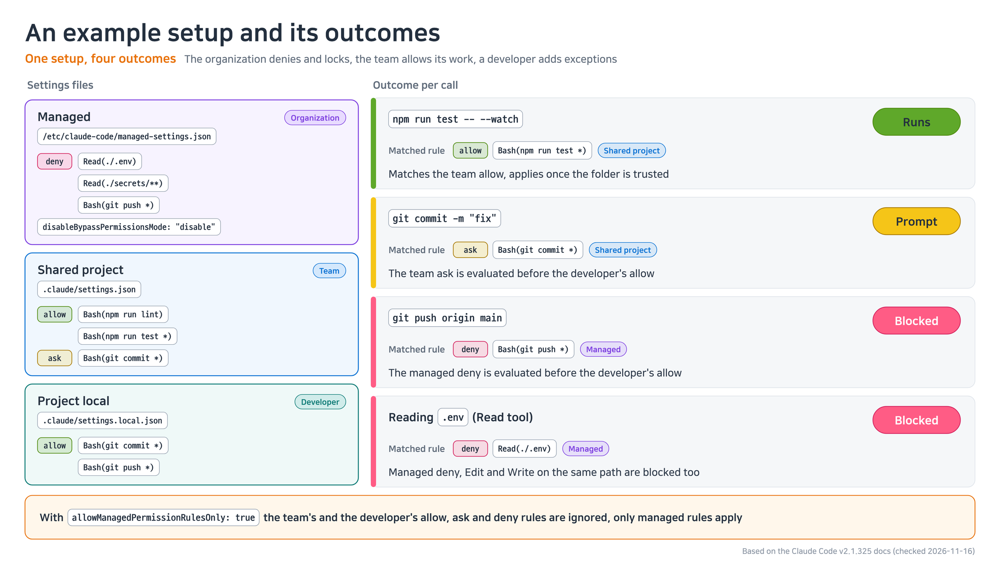
These are the outcomes of four calls in this setup.
npm run test -- --watch: matches the team's allow rule and runs without a prompt. It applies once the teammate has trusted the folder.git commit -m ...: keeps prompting, because the team's ask rule is evaluated before the developer's allow rule.git push origin main: blocked, because the managed deny rule matches before the developer's allow rule..env: blocked by the managed deny rule. A Read deny rule also blocks Edit and Write on the same path.Add allowManagedPermissionRulesOnly: true to this and the allow, ask, and deny rules in the team's and the developer's files are all ignored, leaving only the managed rules. The team's npm allow rules have to move into managed settings to run without a prompt. In company terms, the company-wide policy gained a clause saying that only head office documents count as rules. The clauses in the team rules and on the desk note lose effect, prohibitions and approvals alike.
08
When a value you set does not seem to apply, check in this order.
Setting sources line in /status. A file with broken JSON is skipped as a whole.--settings, and the managed sources. A flag or an environment variable can also override that one key on its own.defaultMode: "auto" in a project file./permissions.additionalDirectories do not apply.Skipped sources in /status and with claude doctor.| No. | 출처Source | 종류Kind | 확인한 날Checked |
|---|---|---|---|
| 1 | Settings files and precedence - Anthropic, Claude Code Docs | 공식 문서Official docs | 2026-11-16 |
| 2 | Configure permissions - Anthropic, Claude Code Docs | 공식 문서Official docs | 2026-11-16 |
| 3 | Deploy managed settings - Anthropic, Claude Code Docs | 공식 문서Official docs | 2026-11-16 |
| 4 | All settings - Anthropic, Claude Code Docs | 공식 문서Official docs | 2026-11-16 |
| 5 | Claude Code CHANGELOG - anthropics/claude-code | 변경 기록Changelog | 2026-11-16 |